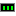

The page tools
The tools below the groove in the toolbox are for building the page. The tools above it are the classic Paint tools, untouched, as is tradition.
| Pointer | Selects, moves, resizes, and edits page elements. Double-click an element to edit it. | |
| Select Elements | Drag a box to select several elements at once, and move or delete them together. | |
| Text Box | Places text on the page. Make it big for a heading, or make it scroll. | |
| Web Text | Like the Text tool, except the words stay words: editable later, and they can be a link. | |
| Section | A section of writing. Sections stack in a column and grow as you type. | |
| Divider | A horizontal line, like it's 1997. | |
| Link | Makes the selected element, or the selected words, a link. | |
| GIF Picker | Finds animated GIFs from GifCities to put on the page. | |
| Pictures | Your site's pictures and photos, and Upload. | |
| Table | A table you can type in. | |
| Guestbook | A guestbook visitors can sign. | |
 | Visitor Counter | Counts your visitors. Possibly both of them. |
| Last Updated | Shows when the page was last saved. | |
| Folder View | Lists the pages in a folder of your site, such as your blog posts. | |
| Contents | Lists the page's sections, each a link to it. | |
| Page Style | The page's background color, wallpaper, and sections column. |
Notes
Related Topics